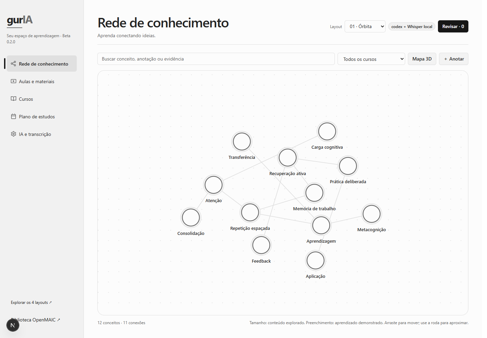
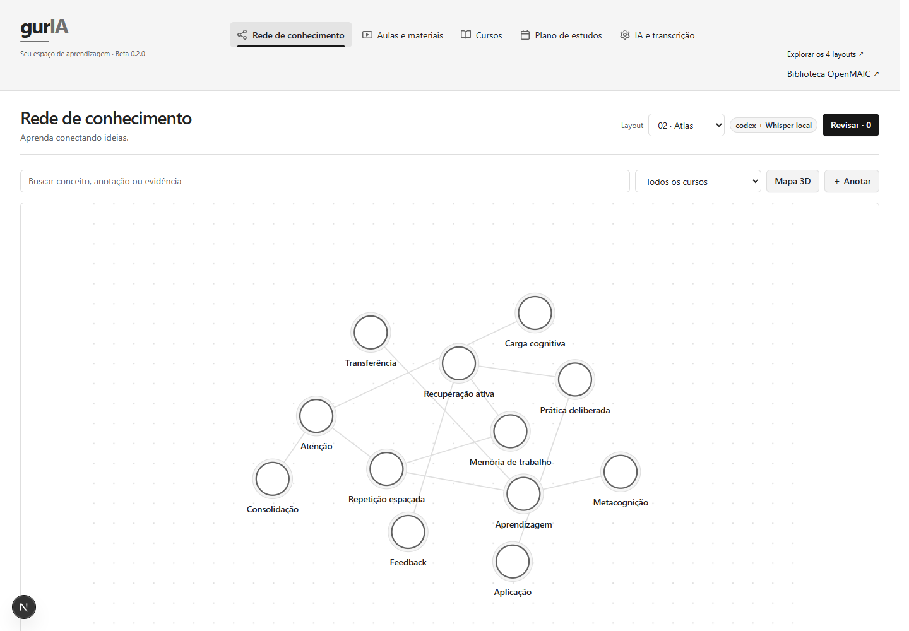
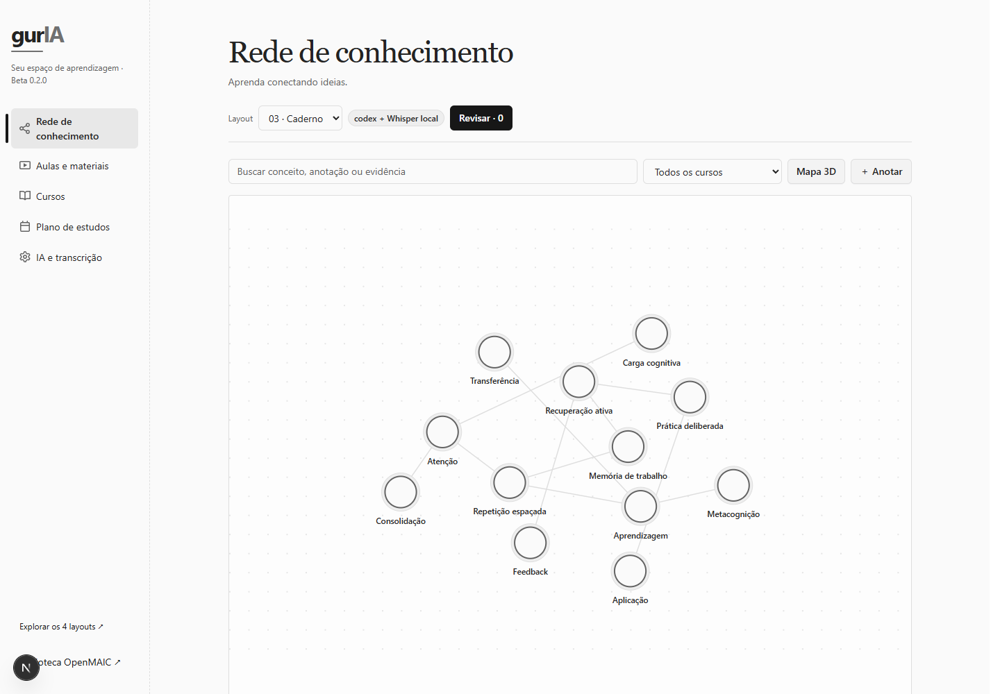
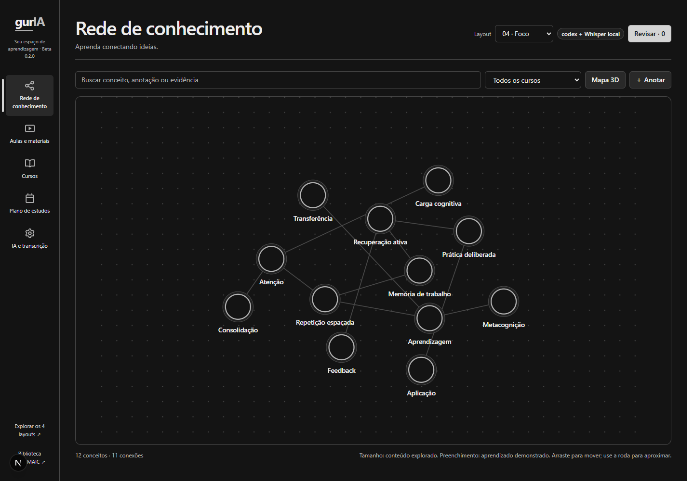

01 / DIREÇÃO VISUALÓrbitaEspaço para conectar.Navegação lateral, respiro generoso e uma grande superfície para explorar sua rede.Mapa em destaqueLateral espaçosaRecomendadoUsar Órbita ↗Ampliar prévia
02 / DIREÇÃO VISUALAtlasTudo pronto para trabalhar.Navegação no topo, cartões compactos e mais largura útil para organizar seus cursos.Navegação superiorPainel compactoMais área útilUsar Atlas ↗Ampliar prévia
03 / DIREÇÃO VISUALCadernoUma ideia de cada vez.Tons de papel, títulos editoriais e uma coluna de leitura para desacelerar e aprofundar.Leitura editorialColuna centralRitmo tranquiloUsar Caderno ↗Ampliar prévia
04 / DIREÇÃO VISUALFocoEntre no seu ritmo.Um ambiente escuro, navegação em trilho e área de trabalho ampla para sessões concentradas.Tema escuroTrilho compactoSessões de focoUsar Foco ↗Ampliar prévia